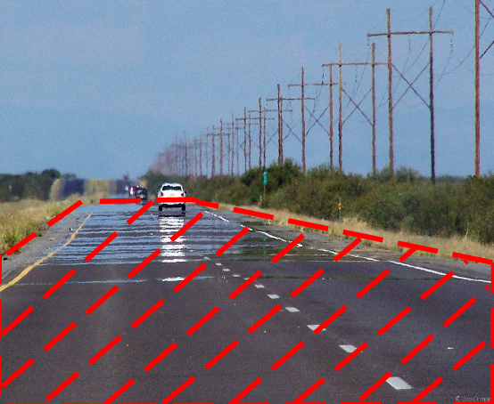

(The index of refraction is smaller on the bottom than on the top)
To account for the change of index of refraction due to the change of air density, we implemented three different methods: Equal Slab Method, Alternative Slab Method, and Euler Ray Tracing Method.
|
(The index of refraction is smaller on the bottom than on the top) |
In this method, we model the change of air density using horizontal slabs. Each slab is of equal height and each of the slab represents a different index of refraction. To get the value for a particular position on the image plan, we shoot a ray from that position into the scene. The ray travels in a straight line until it hits the boundary of the slab. We then use Snell's Law to calculate the new direction. This ray tracing continues until the ray either hits the boundary of the scene or a primitive in the scene.

|
The following are images rendered using different number of slabs. As one can see, if we only model the air with a small number of slabs, we create a lot of artifacts, and the image looks far from accurate. It takes 700 slabs to render a relatively accurate image.

|

|

|

|

|

|
However, the method mentioned earlier has two main problems, it takes too long to render and it requires a large number of slab to generate an approximately accurate image

|
In this modified slab method, instead of fixing the height of the slab, we fix the ray length, such that the light is traveling the same distance within a slab. For rays with a smaller angle (with respect to the normal), it corresponds to a larger slab.

(Low Resolution) |

(Moderate Resolution) |

(High Resolution) |

(Low Resolution) |

(Moderate Resolution) |

(High Resolution) |
In the previous two slab methods, we assume that index of refraction stays constant in points with the same height, however, more complex scenes will require us to relax that assumption. We solve the general case using general equation based on Fermat's principles.

|
To solve discretize equation and Euler's method to estimate path.

|
In a more complicated scene, the heat source might be more than just the entire floor. Using the previous example, only the red shaded area of the scene has a relatively higher temperature than the rest.
|

|

while the rest of the area has 1 as index of refraction. |
Modern camera lenses are made of different glass componenets. Each of the componenets has different index of refraction. These lenses combine together to work as an approximation ideal thin lens. Such combination deviates from the ideal thin lense models, so called aberrations. Aberrations cause visible artifacts in final images.
Instead, we can use lenses whose index of refraction changes throughout the material. This way, we can create flat lenses and/or lenses without abberations. In thoery, the human eye also has varying index of refraction.
Source for all equations is International Society for Optics and Photonics
(Read more at: https://spie.org/publications/tt48_55_gradient_index_lens)

32 light rays 10 bounces | |

32 light rays 10 bounces |

32 light rays 10 bounces |
Milestone resources
Milestone Video